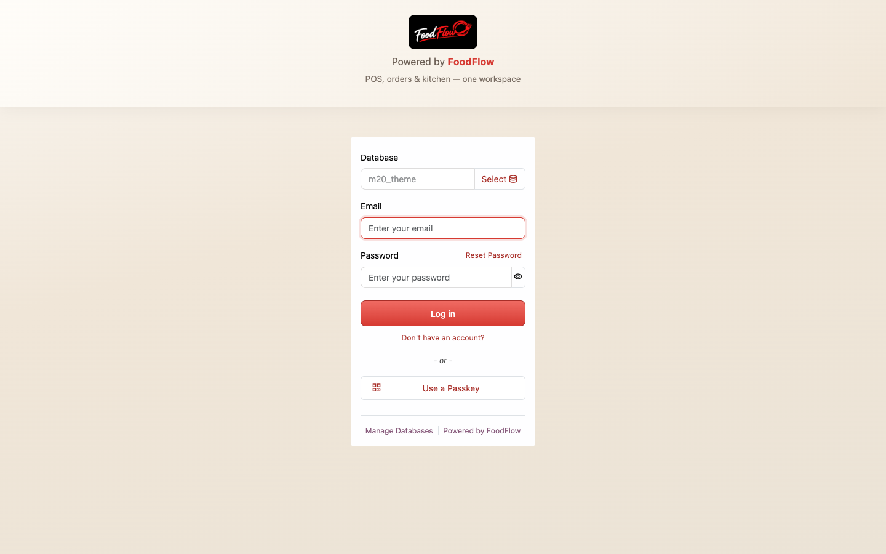
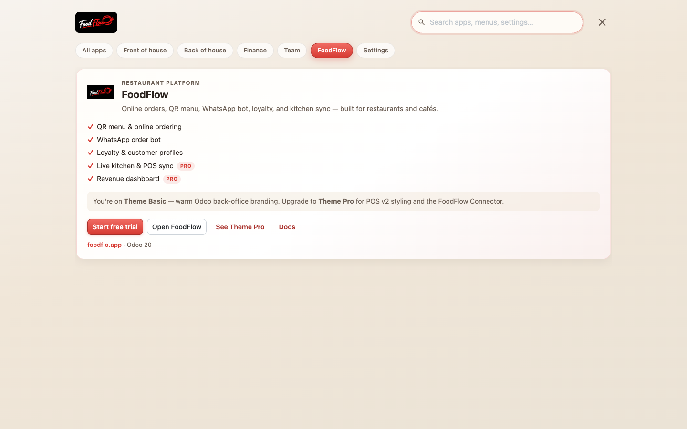

<section class="oe_container" style="padding:0;background:#ffffff;">
<div style="max-width:1120px;margin:0 auto;font-family:Cairo,'Segoe UI',system-ui,-apple-system,Roboto,Arial,sans-serif;color:#1c1917;background:#ffffff;padding:8px 12px 24px;">

    <!-- Hero -->
    <div style="text-align:center;padding:40px 16px 24px;">
        <span style="display:inline-block;border:1px solid #fecaca;background:#fef2f2;color:#b91c1c;border-radius:999px;padding:6px 18px;font-size:15px;font-weight:700;">
            Free forever &#183; Odoo 17, 18, 19 &amp; 20 &#183; Community &amp; Enterprise
        </span>
        <h1 style="color:#1c1917;font-size:48px;line-height:1.1;font-weight:800;margin:22px auto 16px;max-width:900px;letter-spacing:-.5px;">
            Make Odoo feel like your restaurant,
            <span style="color:#dc2626;">not like accounting software.</span>
        </h1>
        <p style="font-size:20px;line-height:1.55;color:#57534e;max-width:760px;margin:0 auto 28px;">
            FoodFlow Theme Basic gives your back office a warm hospitality look: a branded login,
            an app launcher your staff will actually like, and a mobile bottom bar for managers on the floor.
            Install it, switch it on, done.
        </p>
        <a href="https://foodflo.app/?utm_source=odoo_apps&amp;utm_medium=store_page&amp;utm_campaign=odoo_theme&amp;utm_content=hero" target="_blank"
           style="display:inline-block;background:#dc2626;color:#fff;font-size:18px;font-weight:700;padding:13px 30px;border-radius:999px;text-decoration:none;margin:4px;">
            Meet FoodFlow &#8594;</a>
        <a href="https://foodflo.app/guide?utm_source=odoo_apps&amp;utm_medium=store_page&amp;utm_campaign=odoo_theme&amp;utm_content=hero_guide" target="_blank"
           style="display:inline-block;background:#fff;color:#1c1917;border:1px solid #d6d3d1;font-size:18px;font-weight:700;padding:12px 30px;border-radius:999px;text-decoration:none;margin:4px;">
            Read the guide</a>
        <p style="font-size:14px;color:#78716c;margin-top:14px;">LGPL-3 &#183; No account needed &#183; Uninstall anytime, Odoo goes back to normal</p>
        
    </div>

    <!-- Stats -->
    <div class="row" style="margin:8px 0 40px;text-align:center;">
        <div class="col-6 col-md-3" style="padding:12px;"><div style="font-size:38px;font-weight:800;color:#dc2626;">1 min</div><div style="color:#57534e;">from install to live</div></div>
        <div class="col-6 col-md-3" style="padding:12px;"><div style="font-size:38px;font-weight:800;color:#dc2626;">$0</div><div style="color:#57534e;">free forever</div></div>
        <div class="col-6 col-md-3" style="padding:12px;"><div style="font-size:38px;font-weight:800;color:#dc2626;">4</div><div style="color:#57534e;">Odoo versions, 17 to 20</div></div>
        <div class="col-6 col-md-3" style="padding:12px;"><div style="font-size:38px;font-weight:800;color:#dc2626;">RTL</div><div style="color:#57534e;">Arabic ready</div></div>
    </div>

    <!-- Problem -->
    <div style="background:#fafaf9;border-radius:20px;padding:40px 24px;margin-bottom:48px;">
        <p style="text-align:center;color:#dc2626;font-weight:700;margin:0 0 6px;">Sound familiar?</p>
        <h2 style="color:#1c1917;text-align:center;font-size:34px;font-weight:800;margin:0 0 28px;">Your team opens Odoo all day. It shouldn't feel cold.</h2>
        <div class="row">
            <div class="col-md-4" style="margin-bottom:16px;">
                <div style="background:#fff;border:1px solid #e7e5e4;border-radius:16px;padding:22px;height:100%;">
                    <h3 style="color:#1c1917;font-size:19px;font-weight:700;margin:0 0 8px;">It looks like an ERP</h3>
                    <p style="margin:0;color:#57534e;">Grey screens built for accountants, not for a busy restaurant or caf&#233; team.</p>
                </div>
            </div>
            <div class="col-md-4" style="margin-bottom:16px;">
                <div style="background:#fff;border:1px solid #e7e5e4;border-radius:16px;padding:22px;height:100%;">
                    <h3 style="color:#1c1917;font-size:19px;font-weight:700;margin:0 0 8px;">Staff can't find their app</h3>
                    <p style="margin:0;color:#57534e;">A long list of apps with no grouping. New hires ask where Inventory or the POS is.</p>
                </div>
            </div>
            <div class="col-md-4" style="margin-bottom:16px;">
                <div style="background:#fff;border:1px solid #e7e5e4;border-radius:16px;padding:22px;height:100%;">
                    <h3 style="color:#1c1917;font-size:19px;font-weight:700;margin:0 0 8px;">Phones are an afterthought</h3>
                    <p style="margin:0;color:#57534e;">Managers check stock and orders on their phone between tables, with tiny menus.</p>
                </div>
            </div>
        </div>
    </div>

    <!-- Steps -->
    <h2 style="color:#1c1917;text-align:center;font-size:34px;font-weight:800;margin:0 0 28px;">Live in 1 minute</h2>
    <div class="row" style="margin-bottom:48px;">
        <div class="col-md-4" style="margin-bottom:16px;text-align:center;">
            <div style="font-size:44px;font-weight:800;color:#dc2626;">01</div>
            <h3 style="color:#1c1917;font-size:19px;font-weight:700;margin:0 0 6px;">Install</h3>
            <p style="color:#57534e;margin:0;">Add FoodFlow Theme Basic from Apps. It only needs the standard <code style="background:#f5f5f4;color:#b91c1c;padding:1px 5px;border-radius:4px;">web</code> and <code style="background:#f5f5f4;color:#b91c1c;padding:1px 5px;border-radius:4px;">mail</code> modules.</p>
        </div>
        <div class="col-md-4" style="margin-bottom:16px;text-align:center;">
            <div style="font-size:44px;font-weight:800;color:#dc2626;">02</div>
            <h3 style="color:#1c1917;font-size:19px;font-weight:700;margin:0 0 6px;">Pick a style</h3>
            <p style="color:#57534e;margin:0;">In <i>Settings &#8594; FoodFlow Theme Basic</i>, choose <b>Restaurant</b> (bold red) or <b>Caf&#233;</b> (terracotta and cream).</p>
        </div>
        <div class="col-md-4" style="margin-bottom:16px;text-align:center;">
            <div style="font-size:44px;font-weight:800;color:#dc2626;">03</div>
            <h3 style="color:#1c1917;font-size:19px;font-weight:700;margin:0 0 6px;">Reload</h3>
            <p style="color:#57534e;margin:0;">Login, navbar, launcher and mobile bar are branded. Untick the setting to go back to stock Odoo.</p>
        </div>
    </div>

    <!-- Features -->
    <p style="text-align:center;color:#dc2626;font-weight:700;margin:0 0 6px;">What you get</p>
    <h2 style="color:#1c1917;text-align:center;font-size:34px;font-weight:800;margin:0 0 28px;">Everything your back office sees, restyled</h2>
    <div class="row" style="margin-bottom:24px;">
        <div class="col-md-4" style="margin-bottom:16px;"><div style="background:#ffffff;border:1px solid #e7e5e4;border-radius:16px;padding:22px;height:100%;">
            <h3 style="color:#1c1917;font-size:19px;font-weight:700;margin:0 0 8px;">App launcher with categories</h3>
            <p style="margin:0;color:#57534e;">Front of house, back of house, finance, team. Search as you type, <kbd style="background:#1c1917;color:#ffffff;padding:1px 6px;border-radius:4px;font-size:13px;">H</kbd> to open, <kbd style="background:#1c1917;color:#ffffff;padding:1px 6px;border-radius:4px;font-size:13px;">Esc</kbd> to close. On Community; Enterprise keeps its own home menu.</p></div></div>
        <div class="col-md-4" style="margin-bottom:16px;"><div style="background:#ffffff;border:1px solid #e7e5e4;border-radius:16px;padding:22px;height:100%;">
            <h3 style="color:#1c1917;font-size:19px;font-weight:700;margin:0 0 8px;">Mobile bottom bar</h3>
            <p style="margin:0;color:#57534e;">Home, current app menus and all apps one thumb away on phones and small tablets.</p></div></div>
        <div class="col-md-4" style="margin-bottom:16px;"><div style="background:#ffffff;border:1px solid #e7e5e4;border-radius:16px;padding:22px;height:100%;">
            <h3 style="color:#1c1917;font-size:19px;font-weight:700;margin:0 0 8px;">Branded login</h3>
            <p style="margin:0;color:#57534e;">A warm sign-in page with your FoodFlow branding instead of the stock Odoo screen.</p></div></div>
        <div class="col-md-4" style="margin-bottom:16px;"><div style="background:#ffffff;border:1px solid #e7e5e4;border-radius:16px;padding:22px;height:100%;">
            <h3 style="color:#1c1917;font-size:19px;font-weight:700;margin:0 0 8px;">White-label basics</h3>
            <p style="margin:0;color:#57534e;">Tab title, favicon, navbar and user menu say FoodFlow instead of Odoo.</p></div></div>
        <div class="col-md-4" style="margin-bottom:16px;"><div style="background:#ffffff;border:1px solid #e7e5e4;border-radius:16px;padding:22px;height:100%;">
            <h3 style="color:#1c1917;font-size:19px;font-weight:700;margin:0 0 8px;">Warm, readable screens</h3>
            <p style="margin:0;color:#57534e;">Cream backgrounds, soft cards and clear buttons across forms, lists, kanban and Discuss.</p></div></div>
        <div class="col-md-4" style="margin-bottom:16px;"><div style="background:#ffffff;border:1px solid #e7e5e4;border-radius:16px;padding:22px;height:100%;">
            <h3 style="color:#1c1917;font-size:19px;font-weight:700;margin:0 0 8px;">Arabic and right-to-left</h3>
            <p style="margin:0;color:#57534e;">Users with an Arabic language get a full right-to-left layout automatically.</p></div></div>
    </div>

    <!-- Screenshots -->
    <div class="row" style="margin-bottom:48px;align-items:center;">
        <div class="col-md-8" style="margin-bottom:16px;">
            
            <p style="text-align:center;color:#78716c;font-size:14px;margin-top:8px;">Desktop app launcher</p>
        </div>
        <div class="col-md-4" style="margin-bottom:16px;">
            
            <p style="text-align:center;color:#78716c;font-size:14px;margin-top:8px;">Phone with bottom bar</p>
        </div>
    </div>
    <div class="row" style="margin:-24px 0 48px;">
        <div class="col-md-6" style="margin-bottom:16px;">
            
            <p style="text-align:center;color:#78716c;font-size:14px;margin-top:8px;">Branded login</p>
        </div>
        <div class="col-md-6" style="margin-bottom:16px;">
            
            <p style="text-align:center;color:#78716c;font-size:14px;margin-top:8px;">FoodFlow tab in the launcher</p>
        </div>
    </div>

    <!-- FoodFlow platform (lead magnet) -->
    <div style="background:linear-gradient(150deg,#991b1b 0%,#7f1d1d 60%,#5b1313 100%);border-radius:24px;padding:44px 28px;color:#fff;margin-bottom:48px;">
        <div class="row" style="align-items:center;">
            <div class="col-md-7" style="margin-bottom:16px;">
                <p style="color:#fecaca;font-weight:700;margin:0 0 6px;">Made by FoodFlow</p>
                <h2 style="font-size:34px;font-weight:800;line-height:1.15;margin:0 0 14px;color:#fff;">Take your restaurant online. Keep 100% of every order.</h2>
                <p style="font-size:17px;line-height:1.6;color:#fee2e2;margin:0 0 20px;">
                    FoodFlow is the ordering platform behind this theme: your own branded menu, customers order and pay
                    from a link, WhatsApp or a table QR code, with no app to download and 0% commission.
                    Most restaurants go live in about 5 minutes.
                </p>
                <a href="https://foodflo.app/signup?utm_source=odoo_apps&amp;utm_medium=store_page&amp;utm_campaign=odoo_theme&amp;utm_content=platform_signup" target="_blank"
                   style="display:inline-block;background:#fff;color:#991b1b;font-size:18px;font-weight:800;padding:13px 30px;border-radius:999px;text-decoration:none;margin:4px 4px 4px 0;">
                    Start 14-day free trial &#8594;</a>
                <a href="https://foodflo.app/?utm_source=odoo_apps&amp;utm_medium=store_page&amp;utm_campaign=odoo_theme&amp;utm_content=platform_pricing#pricing" target="_blank"
                   style="display:inline-block;border:1px solid rgba(255,255,255,.5);color:#fff;font-size:18px;font-weight:700;padding:12px 28px;border-radius:999px;text-decoration:none;margin:4px;">
                    See pricing</a>
                <p style="font-size:14px;color:#fecaca;margin:12px 0 0;">No credit card &#183; Cancel anytime</p>
            </div>
            <div class="col-md-5">
                <ul style="list-style:none;padding:0;margin:0;font-size:17px;line-height:2.1;color:#ffffff;">
                    <li>&#10003; Branded digital menu and QR codes</li>
                    <li>&#10003; Commission-free online ordering</li>
                    <li>&#10003; Online card payments</li>
                    <li>&#10003; WhatsApp and Telegram order bot</li>
                    <li>&#10003; Loyalty, promotions and combos</li>
                    <li>&#10003; Kitchen display and multi-branch</li>
                </ul>
            </div>
        </div>
    </div>

    <!-- Basic vs Pro -->
    <h2 style="color:#1c1917;text-align:center;font-size:34px;font-weight:800;margin:0 0 24px;">Basic or Pro?</h2>
    <div style="overflow-x:auto;margin-bottom:48px;">
        <table style="width:100%;max-width:820px;margin:0 auto;border-collapse:collapse;font-size:16px;">
            <thead>
                <tr style="border-bottom:2px solid #e7e5e4;">
                    <th style="text-align:left;padding:12px;color:#1c1917;"></th>
                    <th style="text-align:center;padding:12px;color:#1c1917;">Basic<br/><span style="font-weight:400;color:#57534e;">free, this module</span></th>
                    <th style="text-align:center;padding:12px;color:#dc2626;">Pro<br/><span style="font-weight:400;color:#57534e;">with a FoodFlow plan</span></th>
                </tr>
            </thead>
            <tbody>
                <tr style="border-bottom:1px solid #f5f5f4;"><td style="padding:10px 12px;color:#1c1917;">Hospitality back-office theme</td><td style="text-align:center;color:#16a34a;font-weight:700;">&#10003;</td><td style="text-align:center;color:#16a34a;font-weight:700;">&#10003;</td></tr>
                <tr style="border-bottom:1px solid #f5f5f4;"><td style="padding:10px 12px;color:#1c1917;">Branded login, navbar and favicon</td><td style="text-align:center;color:#16a34a;font-weight:700;">&#10003;</td><td style="text-align:center;color:#16a34a;font-weight:700;">&#10003;</td></tr>
                <tr style="border-bottom:1px solid #f5f5f4;"><td style="padding:10px 12px;color:#1c1917;">App launcher and mobile bottom bar</td><td style="text-align:center;color:#16a34a;font-weight:700;">&#10003;</td><td style="text-align:center;color:#16a34a;font-weight:700;">&#10003;</td></tr>
                <tr style="border-bottom:1px solid #f5f5f4;"><td style="padding:10px 12px;color:#1c1917;">Restaurant and Caf&#233; presets, Arabic RTL</td><td style="text-align:center;color:#16a34a;font-weight:700;">&#10003;</td><td style="text-align:center;color:#16a34a;font-weight:700;">&#10003;</td></tr>
                <tr style="border-bottom:1px solid #f5f5f4;"><td style="padding:10px 12px;color:#1c1917;">Restyled POS with product cards and channel pills</td><td style="text-align:center;color:#78716c;">&#8212;</td><td style="text-align:center;color:#16a34a;font-weight:700;">&#10003;</td></tr>
                <tr style="border-bottom:1px solid #f5f5f4;"><td style="padding:10px 12px;color:#1c1917;">FoodFlow Connector: orders and menu sync</td><td style="text-align:center;color:#78716c;">&#8212;</td><td style="text-align:center;color:#16a34a;font-weight:700;">&#10003;</td></tr>
                <tr><td style="padding:10px 12px;color:#1c1917;">Revenue dashboard and top products</td><td style="text-align:center;color:#78716c;">&#8212;</td><td style="text-align:center;color:#16a34a;font-weight:700;">&#10003;</td></tr>
            </tbody>
        </table>
    </div>

    <!-- FAQ -->
    <h2 style="color:#1c1917;text-align:center;font-size:34px;font-weight:800;margin:0 0 24px;">Questions</h2>
    <div style="max-width:820px;margin:0 auto 48px;">
        <div style="border-bottom:1px solid #e7e5e4;padding:14px 0;"><h3 style="color:#1c1917;font-size:18px;font-weight:700;margin:0 0 6px;">Is it really free?</h3><p style="margin:0;color:#57534e;">Yes. LGPL-3, no account, no time limit. FoodFlow is only needed for the Pro features.</p></div>
        <div style="border-bottom:1px solid #e7e5e4;padding:14px 0;"><h3 style="color:#1c1917;font-size:18px;font-weight:700;margin:0 0 6px;">Does it change my POS or my data?</h3><p style="margin:0;color:#57534e;">No. It only changes how the back office looks. The POS stays standard Odoo, and nothing is written to your business records.</p></div>
        <div style="border-bottom:1px solid #e7e5e4;padding:14px 0;"><h3 style="color:#1c1917;font-size:18px;font-weight:700;margin:0 0 6px;">Does it work on Enterprise?</h3><p style="margin:0;color:#57534e;">Yes. Enterprise keeps its own home menu and gets the branding, colours and mobile bar. The theme is light-only, so Odoo stays in light mode while it's switched on.</p></div>
        <div style="border-bottom:1px solid #e7e5e4;padding:14px 0;"><h3 style="color:#1c1917;font-size:18px;font-weight:700;margin:0 0 6px;">How do I turn it off?</h3><p style="margin:0;color:#57534e;">Untick <i>FoodFlow workspace theme</i> in Settings, or uninstall the module. Odoo goes back to its default look.</p></div>
    </div>

    <!-- Final CTA -->
    <div style="text-align:center;background:#fafaf9;border-radius:24px;padding:44px 20px;margin-bottom:24px;">
        <h2 style="color:#1c1917;font-size:36px;font-weight:800;margin:0 0 10px;">Your restaurant. Your customers. <span style="color:#dc2626;">Your profit.</span></h2>
        <p style="font-size:18px;color:#57534e;margin:0 0 22px;">Try FoodFlow's commission-free ordering free for 14 days.</p>
        <a href="https://foodflo.app/signup?utm_source=odoo_apps&amp;utm_medium=store_page&amp;utm_campaign=odoo_theme&amp;utm_content=footer_signup" target="_blank"
           style="display:inline-block;background:#dc2626;color:#fff;font-size:18px;font-weight:700;padding:13px 32px;border-radius:999px;text-decoration:none;">
            Start free &#8594;</a>
        <p style="font-size:14px;color:#78716c;margin:16px 0 0;">
            <a href="https://foodflo.app/?utm_source=odoo_apps&amp;utm_medium=store_page&amp;utm_campaign=odoo_theme&amp;utm_content=footer" target="_blank" style="color:#dc2626;">foodflo.app</a>
            &#183; support@foodflo.app &#183; Odoo 17 / 18 / 19 / 20 &#183; Community and Enterprise &#183; LGPL-3
        </p>
    </div>
</div>
</section>
